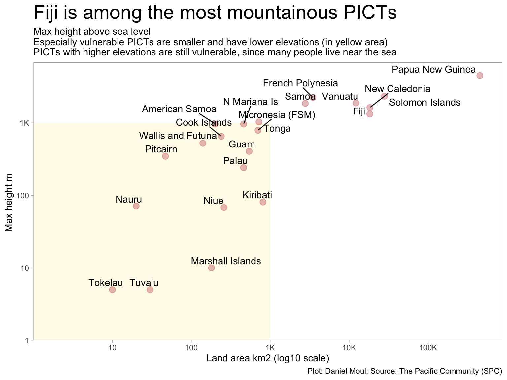

source(here::here("scripts/load-libraries.R"))# run once; needed for ne_countries(... scale = "large")# remotes::install_github("ropensci/rnaturalearthhires")source(here::here("scripts/prepare-who-data.R"))source(here::here("scripts/prepare-osm-data.R"))theme_set(theme_light() +theme(panel.grid.major =element_blank(),panel.grid.minor =element_blank(),plot.title =element_text(size =rel(2))))options(scipen =5)sf_use_s2(FALSE) # following https://github.com/r-spatial/sf/issues/2366my_caption <-"Plot: Daniel Moul; Source: The Pacific Community (SPC)"my_proj <-'+proj=robin +lon_0=0 +x_0=0 +y_0=0 +ellps=WGS84 +datum=WGS84 +units=m +no_defs'
The Fiji Islands are so small and remote from the major continents that they are often omitted from world maps, or when they are included, relegated to the edges of the map, since Fiji land masses are just west and east of 180°:
Show the code
world =ne_countries()world_robin <- world |>st_transform(crs = my_proj)fiji =ne_countries(country ="Fiji", returnclass ="sf", scale ="large") |>st_wrap_dateline(options =c("WRAPDATELINE=YES", "DATELINEOFFSET=30"), quiet =TRUE)fiji_bbox <-st_bbox(fiji)fiji_bbox["xmin"] <-177my_fiji_crop <- fiji_bboxfiji_cropped <-st_crop(fiji, my_fiji_crop)fiji_buf <-st_buffer(fiji_cropped |>st_transform(crs ="WGS84"), dist =2) |>st_wrap_dateline(options =c("WRAPDATELINE=YES", "DATELINEOFFSET=1"), quiet =TRUE) |>st_transform(crs = my_proj)# plot(fiji_buf$geometry)grat <-st_graticule(x =c(-180, -90, 180, 90),crs ="WGS84") |>st_transform(crs = my_proj)# create water polygon for background lats <-c(90:-90, -90:90, 90)longs <-c(rep(c(180, -180), each =181), 180)water_outline <-list(cbind(longs, lats)) %>%st_polygon() %>%st_sfc(crs ="+proj=longlat +ellps=WGS84 +datum=WGS84 +no_defs") %>%st_sf() %>%st_transform(crs = my_proj)ggplot() +geom_sf(data = water_outline,fill ="lightblue", linewidth =0.15, alpha =0.15 ) +geom_sf(data = grat,fill ="lightblue", linewidth =0.15, alpha =0.25) +geom_sf(data = world_robin) +geom_sf(data = fiji_buf, fill ="firebrick", color =NA, alpha =0.25) +geom_sf(data = fiji_cropped, color ="firebrick", fill ="firebrick") +coord_sf(crs = my_proj) +theme(panel.border =element_blank()) +labs(title ="Fiji is split at the edges of the typical world map",subtitle ="Robinson projection",caption ="Daniel Moul. Map source: Natural Earth" )
Figure 1.1: World map (Robinson projection) splits Fiji at 180° longitude
1.1 PICT land and water area
Like many other Pacific island countries and territories, there is an extensive exclusive economic zone (EEZ) surrounding the Fiji Islands:
The the land area and Exclusive Economic Zone (EEZ) in the surrounding ocean varies widely among the PICTs.
Show the code
d_area_eez <- d_pocket |>filter(indicator_2 %in%c("Land area", "EEZ area")) |>arrange(desc(time_period)) |>distinct(geo_pict, indicator_2, .keep_all =TRUE) |>select(-c(time_period, unit_mult, unit_multiplier, data_year)) |>pivot_wider(id_cols =c(geo_pict, place), names_from = indicator_2, values_from = obs_value) |>clean_names() |>mutate(land_pct_of_eez = land_area / eez_area)d_area_eez |>ggplot(aes(eez_area, land_area)) +geom_vline(xintercept =c(3e5, 1e6, 3e6),lty =2, linewidth =0.15, alpha =0.3) +geom_hline(yintercept =10^c(1:5),lty =2, linewidth =0.15, alpha =0.3) +geom_point(aes(size = land_pct_of_eez), color ="firebrick", alpha =0.3) +geom_text_repel(aes(label = place),hjust =0, vjust =1) +scale_x_log10(labels =label_number(scale_cut =cut_short_scale()), ) +scale_y_log10(labels =label_number(scale_cut =cut_short_scale())) +scale_size_continuous(range =c(1, 10),labels = percent,breaks =c(0.001, 0.01, 0.05, 0.1, 0.15)) +expand_limits(x =1e7) +labs(title ="Fiji is among the fortunate PICTs with an EEZ\nof more than 1M km2",subtitle ="Pacific island land area by exclusive economic area (EEZ) water area",x ="EEZ area km2 (log10 scale)",y ="Land area km2 (log10 scale)",caption = my_caption )
Figure 1.3: Fiji is among the fortunate PICTs with an EEZ of more than 1M km2
Some PICTs don’t rise much above sea level, others are mountainous.
Show the code
d_area_height <- d_pocket |>filter(indicator_2 %in%c("Land area", "Max height above sea level")) |>arrange(desc(time_period)) |>distinct(geo_pict, indicator_2, .keep_all =TRUE) |>select(-c(time_period, unit_mult, unit_multiplier, data_year)) |>pivot_wider(id_cols =c(geo_pict, place), names_from = indicator_2, values_from = obs_value) |>clean_names()d_area_height |>ggplot(aes(land_area, max_height_above_sea_level)) +annotate("rect", ymin =1, ymax =1000, xmin =1, xmax =1000,fill ="gold", alpha =0.1) +# geom_vline(xintercept = 10^c(1:5),# lty = 2, linewidth = 0.15, alpha = 0.3) +geom_point(size =3,color ="firebrick", alpha =0.3) +geom_text_repel(aes(label = place),force =2,hjust =0, vjust =1) +scale_x_log10(labels =label_number(scale_cut =cut_short_scale()),expand =expansion(mult =c(0, 0.05)),breaks =10^c(1:5) ) +scale_y_log10(labels =label_number(scale_cut =cut_short_scale()),expand =expansion(mult =c(0, 0.05))) +labs(title ="Fiji is among the most mountainous PICTs", subtitle =glue("Max height above sea level","\nEspecially vulnerable PICTs are smaller and have lower elevations (in yellow area)","\nPICTs with higher elevations are still vulnerable, since many people live near the sea"),y ="Max height m ",x ="Land area km2 (log10 scale)",caption = my_caption )

Figure 1.4: Fiji is among the most mountainous PICTs
1.2 Focus on Fiji
Fiji consists of more than 300 islands (more at low tide!). About three quarters of the people live on the main island Vitu Levu. The capital Suva is in the southeast, and the international airport Nadi (pronounced “nandi”) is in the west.
Figure 1.5: Satellite image and bathymetry of most of the Fiji islands2
Most visitors coming for a holiday to Fiji arrive at Nadi airport on the western side of Viti Levu and stay nearby, since this area generally has the best weather, picturesque South Seas islands, and is easily accessible. The Mamanucas are the island group closest to Nadi, further north are the Yasawas.
Since my travels include the Yasawas, I focus below on the area between Nadi and the Yasawas.